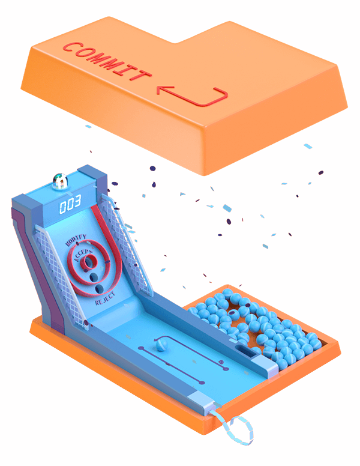

Subscribe to the podcast to receive new episodes as soon as we release them

Looking to get into open source but not sure where to start? Are you a contributor trying to understand why only some pull requests get accepted? Or are you a maintainer who's feeling overwhelmed?
This episode looks at what it means to commit to an open source project. We follow our heroes as they progress through the roles of open source contributors: from finding projects and contributing to them, to building and maintaining thriving communities. Shannon Crabill shares how she got her start in open source at Hacktoberfest 2017, and Corinne Warnshuis describes how important it is to include people from all backgrounds to create good software.
There are many ways to contribute to open source. Let's walk through this together.
00:03 - Nolan Lawson
When I started out doing software development, I was mostly just making little projects that amused me, little apps, little command-line tools, and stuff like that.
00:12 - Lindsey Tulloch
I just really didn't know that it was so easy to contribute and that you don't need to have solved P=MP, your input can still be valuable.
00:21 -Lindsey Tulloch
I just really didn't know that it was so easy to contribute and that you don't need to have solved P=MP, your input can still be valuable.
00:21 - Kanika Muraka
Local communities made me confident enough to contribute.
00:28 - Saron Yitbarek
When I was a total newbie to programming, I teamed up with my friend Dan to make my very first open source pull request (PR), which would also make it my very first open source contribution.
00:42 - Saron Yitbarek
I'd heard so much about contributing to open source, about how amazing it was, but also how completely terrifying. I was very aware, not all communities are kind and not all maintainers are nice.
00:57 - Saron Yitbarek
The project itself was a pretty good one for a first timer. We were just adding a JavaScript library, something to let people get a digital walkthrough of the website. Just a nice well–scoped project. Self–contained. Bonus, if the thing didn't work, I was almost positive it wouldn't burn down the whole site.
01:18 - Saron Yitbarek
Yet, I was crazy nervous about this pull request. Dan and I read the docs for the library, plugged away at our code. I still remember when we were finally done, we just looked at each other like, "That's it?" We made our PR, it was reviewed, got merged, and I guess I was surprised by how, I don't know, how mechanical it all was.
01:43 - Saron Yitbarek
It wasn't some big mystery or magical thing that only they could do. I realized, I really could contribute, too. That's a bit of knowledge we're passing on in this episode; making a contribution to open source isn't magic. It doesn't have to be terrifying. We're going to walk through this together.
02:05 - Lindsey Tulloch
It was just such a groundbreaking realization that this is actually totally open, I can just do this.
02:15 - Saron Yitbarek
In that opener, you heard from command line heroes, just like you, who push through that same terror to join the ranks of open source. They were Nolan Lawson, Lindsey Tulloch, and Kanika Muraka, all heroes.
02:34 - Saron Yitbarek
You're listening to Command Line Heroes, an original podcast from Red Hat. I'm your host, Saron Yitbarek.
02:47 - Saron Yitbarek
This is a story about two command line heroes just trying to make something better in the big open source world. One of them is a contributor, the other's a maintainer. Neither of them are real people, instead these two fictional characters represent all the contributors and all the maintainers that shared their stories with us. Hopefully, you'll see some of yourself in their journey, too.
03:16 - Saron Yitbarek
First meet our friend, the contributor. She's a bit of a newbie, just like we all were once upon a time. She's not sure about what the basic workflow is, but she sees a need and she thinks she can add a feature that would help. Our imaginary contributor is keen to make that fix, but how?
03:44 - Corinne Warnshuis
You're always growing new skills and you don't have to have taken apart a computer as a child to know how to code as an adult.
03:52 - Saron Yitbarek
That's Corinne Warnshuis, the executive director of an awesome organization called Girl Develop It. It's designed to help women who maybe don't feel super comfortable asking questions or may not feel entirely welcome at meetups.
04:07 - Saron Yitbarek
Girl Develop It realized that making contributions isn't the same for everybody; culture matters. Part of our job as a community is to build a little empathy and healthy diversity into the process.
04:22 - Corinne Warnshuis
There are many barriers to entry as we see them, but we like to call them "no good reasons." There are three no good reasons that keep women specifically out of technology. They are: stereotypes, they're the accessibility, and the environment.
04:40 - Saron Yitbarek
It's worth remembering here promoting diversity doesn't just make good ethical sense, it makes good business sense, too.
04:48 - Corinne Warnshuis
Technology as an industry has probably the greatest potential to make the most change in the world today. You really want to have people from all backgrounds, from all perspectives contributing to the tools and services and things that are going to shape the world. I think it's really important that people from all backgrounds are creating software and contributing to open source projects.
05:13 - Saron Yitbarek
The fact is, we didn't all start with the same advantages or experiences. The next great coder might not look like a Silicon Valley cliché.
05:23 - Corinne Warnshuis
In–person instruction has been historically incredibly expensive and inaccessible for people. Again, I think from 2014 to today, that has improved. I think groups other than Girl Develop It like Outreachy, like CodeNewbie, are doing that by providing a safety net or a space to ask questions and get more comfortable.
05:49 - Corinne Warnshuis
Having a safe, welcoming testing ground for some of those ideas and some of those questions is a good place to start.
06:02 - Saron Yitbarek
Speaking of newbies, back to that contributor we were tracking. When you're not from a mainstream background, that first commit can carry a lot of weight. It can feel like you have to prove yourself. Once we get those barriers to entry low enough, what do we actually need to think about as we prepare to contribute?
06:23 - Vincent Batts
It's cool to get excited about certain projects, but what is the use case that you're trying to solve?
06:31 - Saron Yitbarek
Vincent Batts works at Red Hat, mostly on container architecture. He encourages new contributors to try and be intentional about the work. Find that niche where you and the project make sense together.
06:45 - Vincent Batts
I think a project to contribute to usually comes out of a reciprocal relationship. It satisfied a need for you, and along the way you found a way to satisfy a need for it, and it becomes a relationship, even if it is a community of people.
07:01 - Saron Yitbarek
For example:
07:02 - Vincent Batts
I ended up standing up a Slackware Linux box out of a recommendation by a friend. It was suitable enough for me to do what I was trying to do that I ended up helping them get it packaged for the mainstream Slackware Linux community. And ended up becoming a maintainer and contributor on that project, not because I sought out to be a contributor to that Slackware Linux community, but it most well suited the other project, the use case that I was actually trying to solve.
07:33 - Vincent Batts
I think that happens a lot for a lot of folks. They seek to write a database because of their tailored use case, and they find that it works well in Golang, and they wrote such a high–performance database that they were able to contribute back fixes or improvements to Golang to help their database run faster.
07:54 - Saron Yitbarek
You can find your little niche and let a certain amount of organic growth take place. The key point is, start somewhere. You don't have to wait for a degree or for absolute confidence.
08:08 - Vincent Batts
If you need direct experience writing code or writing docs, or even being a system administrator for a back-end database web server, most of these communities are volunteer based. You go out to some project like Debian, Fedora, or whatever, and those communities have docs pages that are set up. Those have to run on a web server somewhere and somebody, even a community member that's not being paid to check if the web server's down or something went wrong, is gaining experience.
08:43 - Saron Yitbarek
Vincent stresses that point about the egalitarian nature of open source. Wherever you're coming from, you really can start contributing, if you want to. You can make a name for yourself, if that's what you want to do.
08:57 - Vincent Batts
Once it's merged, then your name is attached to something. You're publicly representable that you have made an improvement somewhere, which is incredibly meaningful.
09:11 - Vincent Batts
I've worked with folks that were television repairmen and teachers, not in a technical day–to–day job, that were very well represented. They contributed a lot in the community. On the flip side of that, I've worked with developers that sometimes have had 30 years of development experience, but they had never publicly contributed code like that.
09:40 - Saron Yitbarek
How's our contributor doing by the way? Well, she found her niche. She conquered her fears and she's finally made her first pull request. Now she can sit back and be terrified while she waits for the maintainer to respond.
09:56 - Vincent Batts
Contributing upstream is kind of like going on stage for the talent show for the first time; you get nervous, and you go out there and your palms get sweaty. You do a thing and then it's like an achievement. You are profoundly changed, you never will be the same.
10:17 - Saron Yitbarek
Profoundly changed? Maybe. There are in fact four possible responses from a maintainer; silence, that's a fun one, or possibly outright rejection, or outright acceptance. Or the squishy middle ground, a request for change.
10:37 - Saron Yitbarek
A couple days after her PR, our imaginary contributor finally gets a ping back from the maintainer. Lo and behold, it's a request for change. Being new, she takes that as a miniature disaster. She doesn't know yet how request for change is really an accomplishment. She even gets a flash of anger at the clipped tone the maintainer is using. It sort of sounds like he doesn't have time for her.
11:03 - Saron Yitbarek
There's a wall up, and that new contributor has got no idea what's happening on the other side.
11:12 - Saron Yitbarek
Meet a maintainer. The project he's maintaining isn't his full time job; it's a weekend project and he stays up till the wee hours lots of nights prioritizing issues, and reminding folks to update docs when they make pull requests, and you get the idea. He's got a full plate. Sometimes he even experiences a little maintenance burnout.
11:38 - Saron Yitbarek
A real life maintainer, Nolan Lawson, wrote a pretty amazing post that got a lot of traction recently about burnout.
11:51 - Nolan Lawson
I think part of that blog post was kind of a cry for help, honestly. It was me expressing that I had stumbled into this open source thing. It was really fun at first, and now it wasn't so fun. I wasn't sure what I should do to recover.
12:05 - Saron Yitbarek
Nolan's got a day job, but like most maintainers he was putting in tons of after hours work on his open source project because the guy honestly cares. Ironically, part of his pain was coming from the fact that he knows the contributors honestly care, too.
12:23 - Nolan Lawson
What really burned me out more than anything was actually just the flood of well–meaning folks. You want to help them; you really, really do. All they're doing is asking a question, all they're doing is—they found a legitimate bug in your project that's blocking them, or all they're doing is—they actually bothered to download the code and figure out how it builds and to contribute a bug fix. They just want you to review their code that they've contributed.
12:43 - Saron Yitbarek
Maintainers like Nolan are constantly reviewing a library of PRs, figuring out how commits will play into things. They're pushing contributors to do the best work possible, to conform to the house constraints, to contribute in ways that are most meaningful to the larger goals of the project.
13:06 - Saron Yitbarek
Here is my point, chances are those maintainers are not the jerks a new contributor might worry about. They're working their butts off trying to get to everything. They even take the time, lots of maintainers do, to label some things as reserved for first–timers only so newbies have a chance to take a swing.
13:27 - Saron Yitbarek
At the end of the day though, the scope of all the PRs and commits gets overwhelming. How do we make sure that doesn't happen? How do we create environments for maintainers that make sense?
13:41 - Saron Yitbarek
One solution is an open source project with a strong community like Fedora. The Fedora project leader Matthew Miller explains what attracts maintainers and contributors to the project.
13:55 - Matthew Miller
A lot of Fedora is not development, it's all the things that go around development. That's actually true with IT in general, CS (computer science) in general. Open source maybe doesn't have enough of it, the sort of support roles around open source.
14:11 - Saron Yitbarek
What does that support actually look like?
14:14 - Matthew Miller
One of the paid roles we have for example is the Fedora program manager who helps keep the schedule on track, and bugs people about making sure the paperwork is done. Having somebody paid to do it actually helps keep the bureaucracy down because they can put the time in to make it a human thing rather than something that is just a bunch of paper shuffling.
14:34 - Matthew Miller
I think having corporate involvement like that gives stability to some of the roles that you can't guarantee with volunteers.
14:43 - Saron Yitbarek
It sort of reminds me of those work spaces freelancers use. There's a shared reception area, shared wifi, and shared coffee. The manager's handling it, and you're free to do your own thing.
14:55 - Saron Yitbarek
Matthew told us about another Fedora fix. They save you from feeling like everything will collapse if you take a break from your project.
15:04 - Matthew Miller
One of the things we've looked at is making natural endings to leadership roles, where you say you sign up for something, it's not necessarily a lifetime commitment. You can re–sign up, you're not kicked out after a year. If after six months you want to move on, you can gracefully go on without feeling like you're letting people down. We've tried to work on making sure people have a clear exit.
15:27 - Saron Yitbarek
Matthew figures that finding ways to support that open source community without being heavy–handed is the key.
15:35 - Matthew Miller
It's almost like a family rather than something like a workplace or something like that. It's meaningful to contribute to because you're working on this not just for yourself, or not just for some paycheck or an end product, but because the people you're working on it with are your friends and it's something that you're working on together to make something that's bigger than this individual effort.
15:56 - Saron Yitbarek
Whether it's thanks to Fedora or something else, a world where open source contributions are sustainable, now that's a world worth fighting for.
16:10 - Saron Yitbarek
Meanwhile, back at her desk, that new contributor we were following just finished the changes the maintainer asked for. She doesn't realize it yet, but she's about to have her first pull request accepted.
16:24 - Saron Yitbarek
It's easy to lose sight of those early steps when we talk about long–term issues like burnout. Every day, there are new contributors all over the world joining the party. That's really why we need to build a sustainable humane place where all this open source magic can happen.
16:49 - Saron Yitbarek
In the end, our contributor and our maintainer work together to nudge things forward. There's one last piece of the story—remember that all that back and forthing depends on development platforms like GitHub and GitLab, places where we can all come together.
17:09 - Saron Yitbarek
I wanted to dive deep into how those communities make our work possible. I got chatting with Shannon Crabill about it. Shannon's an email developer by day, but by night she's learning front–end development. She's also someone who knows first–hand about the value of community.
17:28 - Saron Yitbarek
Last year she participated in a month–long celebration of open source called Hacktoberfest, an initiative to get more people to contribute to open source. At the time, Shannon was very much an open source newbie.
17:44 - Shannon Crabill
Thinking back to that point in October, I felt like I wasn't finding much to work on and there's probably other beginners or maybe even more beginners who were also not finding things to work on. Maybe if I put something out there that's relatively easy, they'll have some place to try and learn, and get used to Git and GitHub.
18:04 - Shannon Crabill
I think the hardest part is getting used to the motions of just how it works and practicing. How do I push repo? How do I share a project? How do I do pull requests and that sort of thing. I got people to contribute, which was surprising, but also really awesome.
18:21 - Saron Yitbarek
Was that scary at all? I feel like if you're new, you're putting yourself out there despite even having the repo, period. Now you have people actually contributing and you have to talk to them, and review their code, and have opinions. That sounds like that can be a little intimidating.
18:42 - Shannon Crabill
I think the initial reactions were like, "Oh my God, this is so cool", and also, "Holy crap, what have I gotten myself into?" I realized I had merged my own code into my own code, I merged my own pull requests and pushed to the site and everything like that. I had not done anyone else's. I think I hadn't done a pull request, merging it before then, so I had to figure that out. Merge complex in general is something that I still struggle with a little bit.
19:09 - Shannon Crabill
It was this whirlwind of feelings, "This is cool. I don't know how to go about this." Everyone was really friendly, and I just tried to stay very friendly and honest, even if it was just, "Hey, I'm overwhelmed. I see everyone's pull request. I won't get to them tonight, but I'll get to them tomorrow." People seemed to respond well to that.
19:26 - Saron Yitbarek
Yes. One thing that I've always wondered when you are maintaining a project—especially as a newer developer—is does it mean that you have to be the smartest person on the repo? You're essentially grading, you're judging and reviewing other people's code. Have you had a situation where you didn't know as much as the person making a pull request? How did you deal with that?
19:55 - Shannon Crabill
That's a really good one. I could see thinking that, "Oh, I need to be the smartest, best developer ever," would maybe be a hindrance. I think I was lucky that I didn't think that when I went into this, so I was able to go into it like, "Let's just go for it, see what happens."
20:12 - Shannon Crabill
You don't need to be senior developer, 20 years experience. You just need to have an idea and just know how to use the software, and just be willing to learn if you don't know.
20:22 - Shannon Crabill
There were definitely one or two pull requests that added some really cool features to my project that to be honest, if it broke, I don't really know how to fix it. I can look at the code and be like, "Yeah, it's broken." To be able to build that from scratch, I wouldn't know how.
20:34 - Shannon Crabill
I think that's the cool thing about it. If it was just me contributing, I might have done some neat stuff but not as cool as what other people are bringing their experiences to the table with to do.
20:45 - Saron Yitbarek
As a maintainer, what are some lessons that you've learned along the way to make the project more accessible, more friendly, easier to contribute to?
20:55 - Shannon Crabill
Sure. The one thing that I think was really helpful, and I wish I had done this initially, is to set up templates wherever possible and documentation, documentation, documentation.
21:07 - Shannon Crabill
I definitely added a lot to my README file as I went, and I think just having a README file to start is a really big step. Just even links to, "Hey, check out our guidelines for contributing." I think I made a pull request template, I made issue templates, "Click here to see current issues," so people aren't submitting the same things multiple times.
21:31 - Shannon Crabill
Making it as easy as possible, or as user friendly as possible, I think is a big step you can do as a maintainer.
21:38 - Saron Yitbarek
Absolutely. READMEs, I see them all the time, I hear about how important they are; I feel like it's also there's so much you can do in a README. At the end of the day, it's kind of a blank document that tells people to read it. What do you do in that document? How do you structure it to make it really connect with people who are looking to contribute?
22:00 - Shannon Crabill
I think in my README I had a lot gifs in there.
22:03 - Saron Yitbarek
Nice.
22:05 - Shannon Crabill
I had gifs, I think I had links to–
22:07 - Saron Yitbarek
What I was starting to hear was that Shannon had quickly learned how important the relationships are. She knew straight away that the work was going to shine if people were invested, and even having a good time.
22:20 - Shannon Crabill
There's people doing great things with open source projects, I also think it can be fun and a fun project to say, "Hey, I made these cool bats that randomly generate on this page every time you click."
22:33 - Saron Yitbarek
I also love that there's so many different types of things that people can do. If you're really into the artistic cool stuff, you can do the bat generation feature. If you want to clean up, you can do that, too. If you're like, "I'm going to stick to the documentation, I'm going to spend my time to make this room, this place, a little bit cleaner for all my other contributors," then there's the option to do that, too.
22:56 - Shannon Crabill
Yeah. I tried to make it clear that whatever you want to contribute is fine with me. If you catch a spelling error and you want to fix that, great. If you notice a link is broken and you want to fix that, great. If you just want to help comment this code so it's easier to read and understand, that would be really helpful.
23:12 - Saron Yitbarek
I think it's really awesome that you had such a positive experience with the community, because I've heard lots of stories where that really wasn't the case. People weren't very nice online, and weren't very welcoming and kind, especially to newbies who we tend to ask some more simpler questions than are expected.
23:33 - Saron Yitbarek
What do you think helped make your community a nicer place compared to what some other communities are like?
23:41 - Shannon Crabill
Just the fact that it was a very casual thing. If you want to contribute, you can, cool. If you don't, that's also cool. I definitely had the thought that open source was this big scary thing, you need to have all this experience and know all these complicated languages, or back–end and front–end and everything in between to be able to contribute to.
24:03 - Saron Yitbarek
Absolutely. How has doing Hacktoberfest, how's that changed your idea of open source now?
24:11 - Shannon Crabill
It's definitely changed it for the better. Like I said, I had a great experience and I hope everyone that was involved with my project in some way or another had a good experience, too. It's definitely given me the push to want to try things like that more often, even if they don't go anywhere. It seems more obtainable now.
24:32 - Saron Yitbarek
Music to my ears.
24:34 - Saron Yitbarek
Here's something; thousands of people from hundreds of companies, and some from no company at all, contribute to the Linux kernel. That means Linux, which basically runs the internet, is maintained by a whole army of everyday heroes. If you're feeling eager to make your first contribution to open source, maybe you want to learn more about the Fedora community, we've got a ton of materials waiting to help you out. Check out redhat.com/commandlineheroes for more.
25:20 - Saron Yitbarek
Quick reminder, this season we're building our very own open source Command Line Heroes game. You are invited to contribute in whatever makes sense for you. Get the deets on how to be a part of it; we would love for you to build this game with us over at redhat.com/commandlineheroes.
25:42 - Saron Yitbarek
Next episode, we're all about the ruthless Darwinian process of errors and the beauty of failure in open source development—how it haunts us, guides us, and makes us better.
25:57 - Saron Yitbarek
Command Line Heroes is an original podcast from Red Hat. Listen for free on Apple Podcast, Google Podcast, or wherever you do your thing. I'm Saron Yitbarek, until next time, keep on coding.
Keep going
The evolution of open source contributors: from hobbyists to professionals
Open source contributors aren't easy to recognize—and that's a good thing.
How to create a pull request: contributing to open source
Working directly on the command line isn't for everyone. But you can still code and contribute.
What was your first open source pull request or contribution?
People's first contributions aren't always glamorous. Don't let overblown expectations stop you.
Command Line Heroes: The Game
This week: Committed to open source game development. Get the nitty gritty scoop on how to develop open source games.
Featured in this episode
Also in this episode
Get the newsletter
After each episode drops, we'll send you commentary from the Command Line Heroes team, as well as links that help you take a closer look at the topics we cover. It's as simple as that.
Presented by Red Hat
For 25 years, Red Hat has been bringing open source technologies to the enterprise. From the operating system to containers, we believe in building better technology together–and celebrating the unsung heroes who are remaking our world from the command line up.